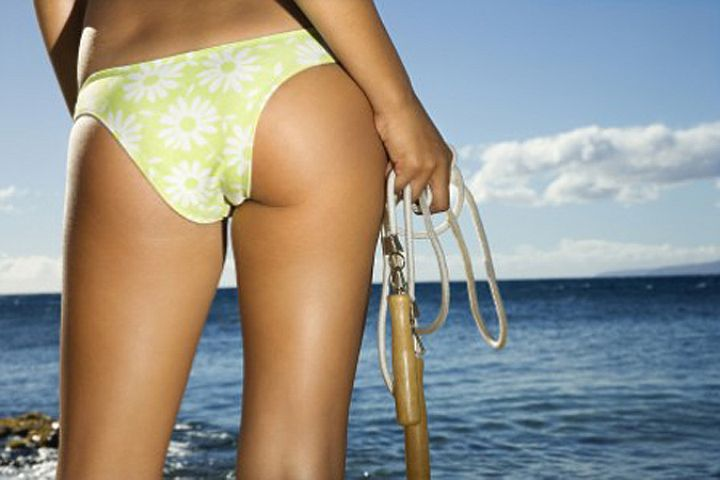

Красивая и подтянутая фигура – это мечта каждого человека. Ради идеальных форм многие решаются морить себя изнурительными диетами. Однако следует отметить, что одними диетами достичь своего идеала не получится. Для достижения красивой фигуры надо обязательно совмещать диеты с физическими занятиями. Для того чтобы не тратить много времени в тренажерных залах можно купить себе такой спортивный снаряд, как скакалка. Скакалка – это отличный спортивный снаряд, который поможет избавиться от лишнего веса, целлюлита и развить выносливость. Так, например, если прыгать на скакалке 10 минут не переставая, то можно сбросить до 200 кКал.

В идеале за 1 минуту следует делать около 100 прыжков. Однако поначалу это сделать довольно сложно. Но не стоит переживать, так как со временем занятия будут даваться намного проще. И это еще далеко не все плюсы скакалки. Нельзя не отметить, что стоимость данного снаряда довольно низкая, что позволяет каждому желающему стать его счастливым обладателем. К тому же прыгать со скакалкой можно в любом месте. Во время занятия тренируется вестибулярный аппарат и развивается гибкость и пластичность. Уже через несколько таких занятий ноги станут заметно более упругими, а объемы бедер уменьшаться.

Все дело в том, что именно данные части тела больше всего задействованы во время прыжков. Очень важно правильно подобрать скакалку. Главный критерий, от которого надо отталкиваться во время выбора – это собственный рост. Людям, с ростом не более 152 см лучше выбирать снаряд длиной около 210 см. Если рост составляет от 153 до 167 см, то в магазине лучше обратить свое внимание на скакалку длиной 250 см. Если же рост превышает 167 см, то идеальным вариантом будет скакалка от 280 см. Как только снаряд выбран, можно начинать занятия. Для начала лучше выполнять невысокие прыжки, при этом важно контролировать положение своего тела. Основная нагрузка должна лечь на мышцы предплечий, запястий и ног. Только так можно получить желаемый результат. Усложнять занятия следует только через время. Можно прыгать поочередно то на одной ноге, то на другой. Также очень эффективны прыжки в разные стороны.